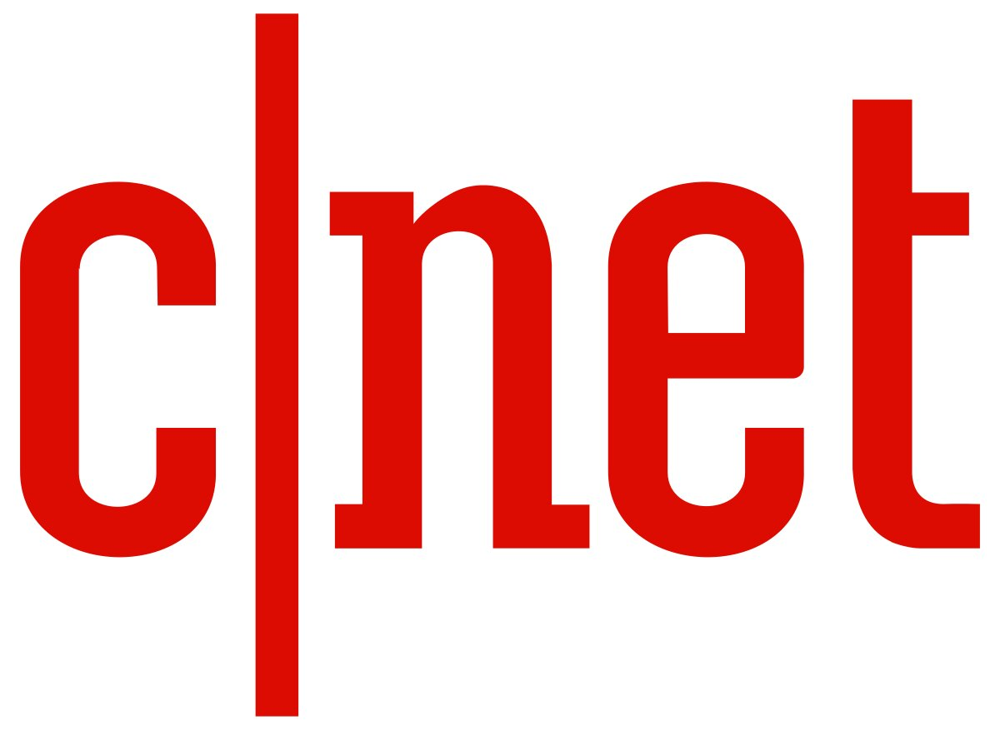

1) The Verge
The Verge is an American technology news website operated by Vox Media, publishing news, feature stories, guidebooks, product reviews, and podcasts.
The website launched on November 1, 2011, and uses Vox Media's proprietary multimedia publishing platform Chorus. In 2013, Nilay Patel was named editor-in-chief and Dieter Bohn executive editor; Helen Havlak was named editorial director in 2017. The Verge won five Webby Awards for the year 2012 including awards for Best Writing (Editorial), Best Podcast for The Vergecast, Best Visual Design, Best Consumer Electronics Site, and Best Mobile News App.
2) Gizmodo
Gizmodo is a design, technology, science and science fiction website. It was originally launched as part of the Gawker Media network run by Nick Denton, and runs on the Kinja platform. Gizmodo also includes the subsite io9, which focuses on science fiction and futurism. Gizmodo is now part of G/O Media, owned by private equity firm Great Hill Partners.
3) Engaged
Engadget is a multilingual technology blog network with daily coverage of gadgets and consumer electronics. Engadget operates a total of ten blogs—four written in English and six international versions with independent editorial staff. Engadget has ranked among the top five in the "Technorati top 100" and was noted in Time for being one of the best blogs of 2010. It has been operated by AOL since October 2005.
4) TechCrunch
TechCrunch is an American online newspaper focusing on high tech and startup companies. It was founded in June 2005 by partners of Archimedes Ventures, Michael Arrington and Keith Teare, and was acquired in 2010 by AOL for $25 million. TechCrunch is also best known for its Disrupt conferences, an annual technology event hosted in several cities across United States, Europe, and China.
5) Wired
Wired is a monthly American magazine, published in print and online editions, that focuses on how emerging technologies affect culture, the economy, and politics. Owned by Condé Nast, it is headquartered in San Francisco, California, and has been in publication since March/April 1993. Several spin-offs have been launched, including Wired UK, Wired Italia, Wired Japan, and Wired Germany.
6) CNET
CNET (short for Computer Network) is an American media website that publishes reviews, news, articles, blogs, podcasts, and videos on technology and consumer electronics globally, owned by Red Ventures since 2020. Founded in 1994 by Halsey Minor and Shelby Bonnie, it was the flagship brand of CNET Networks and became a brand of CBS Interactive through that unit's acquisition of CNET Networks in 2008, which was the previous owner prior to October 30, 2020. CNET originally produced content for radio and television in addition to its website and now uses new media distribution methods through its Internet television network, CNET Video, and its podcast and blog networks.
In addition, CNET has region-specific and language-specific editions. These include Chinese, French, German, Japanese, Korean, and Spanish.

7) Ars Technica
Ars Technica is a website covering news and opinions in technology, science, politics, and society, created by Ken Fisher and Jon Stokes in 1998. It publishes news, reviews, and guides on issues such as computer hardware and software, science, technology policy, and video games.
Ars Technica was privately owned until May 2008, when it was sold to Condé Nast Digital, the online division of Condé Nast Publications. Condé Nast purchased the site, along with two others, for $25 million and added it to the company's Wired Digital group, which also includes Wired and, formerly, Reddit. The staff mostly works from home and has offices in Boston, Chicago, London, New York City, and San Francisco.
The operations of Ars Technica are funded primarily by advertising, and it has offered a paid subscription service since 2001.
8) Mashable
Mashable is an international entertainment, culture, tech, science and social good digital media platform, news website and multi-platform media and entertainment company founded by Pete Cashmore in 2005.
9) ZDNet
ZDNet is a business technology news website owned and operated by Red Ventures, along with TechRepublic. The brand was founded on April 1, 1991, as a general interest technology portal from Ziff Davis and evolved into an enterprise IT-focused online publication.
10) VentureBeat
VentureBeat, stylized as VB, is an American technology website headquartered in San Francisco, California. It publishes news, analysis, long-form features, interviews, and videos.